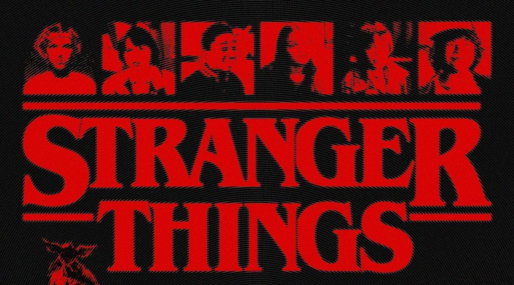
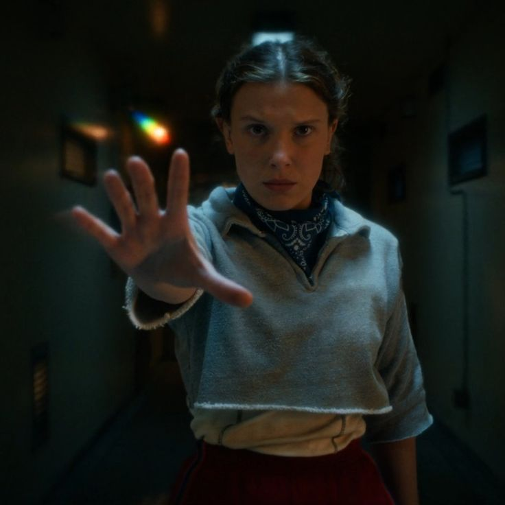
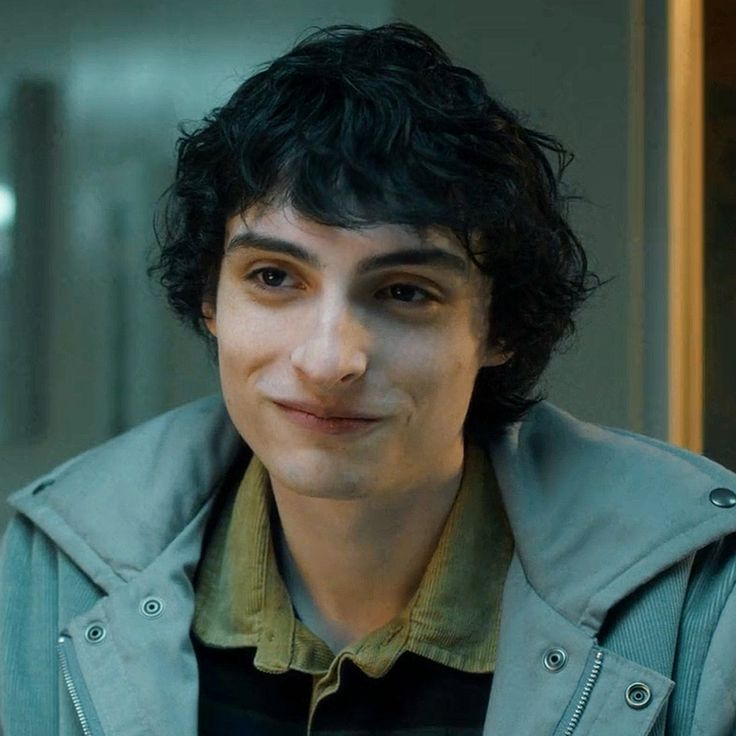
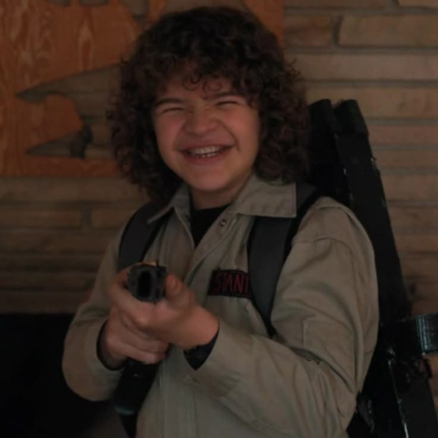
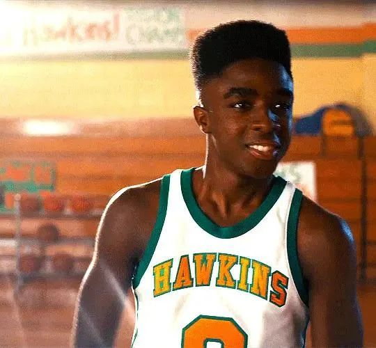
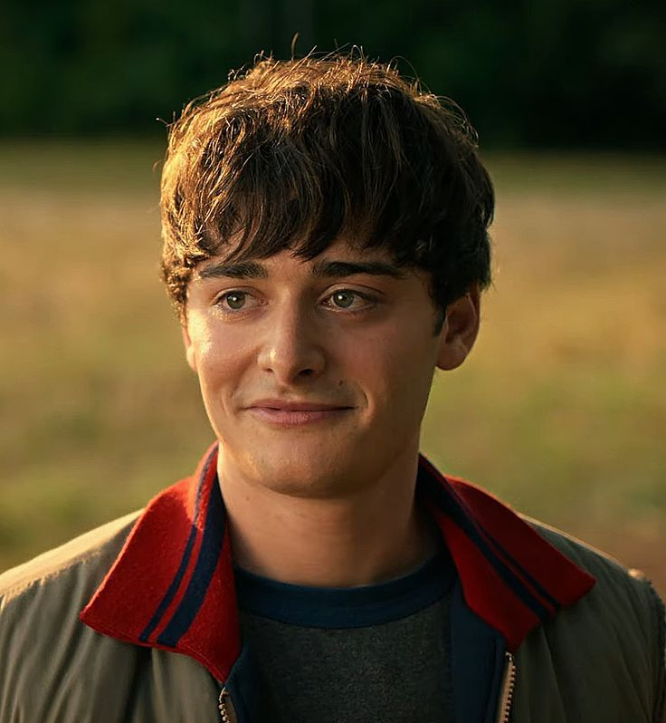

A WORLD OF MYSTERY & FRIENDSHIP - STRANGER THINGS
Introduction🔻
Stranger Things is one of my favorite shows that helps me escape from reality.
It is not just a series;it is an experience filled with
mystery, friendship, and adventure.
Stranger Things is an American sci-fi television series created by the
Duffer Brothers
Matt Duffer and Ross Duffer (born February 15, 1984), often credited as the Duffer Brothers, are both
American film and
television show makers. They are best known as the creators, directors, and executive producers of the
Netflix science fiction horror series Stranger Things
for Netflix. Produced by Monkey Massacre Productions and 21 Laps Entertainment,
the first season was released on Netflix on July 15, 2016. The second and third seasons
followed in October 2017 and July 2019, respectively, and the fourth season was released
in two parts in May and July 2022. The fifth and final season was released in three parts in
November and December 2025, with the finale debuting on December 31.
The show combines elements of horror, science fiction, mystery,
and coming-of-age drama.
The story and world🚩
The show is set in a small town, but behind that normal life is a dark and mysterious world
called the
Upside Down
The Upside Down is a fictional interdimensional wormhole featured in the Netflix science fiction horror
series
Stranger Things, created by the Duffer Brothers.
.This concept itself feels unreal and exciting.
Set in the 1980s, the series centers on the residents of the fictional small town of Hawkins ,
Indiana, after a young girl with psychokinetic abilities, named Eleven, opens a gateway
between Earth and a hostile alternate dimension known as the Upside Down at a nearby human
experimentation facility .Every season keeps the audience curious and emotionally connected.
Characters and Friendship
What I love most about Stranger Things is the friendship between the characters.
They support each other no matter how dangerous the situation is.
Their bond makes the show feel warm and emotional.
Cast
Eleven , Played by

Millie Bonnie Bongiovi , born 19 February 2004 , known professionally as
Millie_Bobby_Brown
is a British actress and film producer. She gained international recognition for playing Eleven in the
Netflix science
fiction series Stranger Things.
ELEVEN is one of the most important characters in Stranger Things. She has special powers and
a mysterious past. Her character shows both strength and innocence. I like Eleven because she is
brave, emotional, and always tries to protect her friends.
Her journey from being scared to becoming confident makes the show more powerful.
Mike Wheeler , Played by

Finn Wolfhard
(born December 23, 2002) is a Canadian actor, musician, and film director.
He received international attention for playing Mike Wheeler on the Netflix series Stranger Things
(2016–2025).
He also played Richie Tozier in the horror film It (2017) and its sequel It Chapter Two (2019),
and Trevor Spengler in the supernatural comedy Ghostbusters: Afterlife (2021) and its sequel
Ghostbusters: Frozen Empire (2024).
Mike is the heart of the friend group. He is caring, intelligent,
and loyal to his friends. His relationship with Eleven is emotional and meaningful.
Mike represents true friendship and leadership, which makes his character very relatable.
Dustin Henderson , Played by

Gaetano John
Gaten Matarazzo
(born September 8, 2002) is an American actor.
Matarazzo gained international recognition for playing Dustin Henderson in the Netflix
science-fiction-horror drama
series Stranger Things .
Dustin brings humor and positivity to the show. His funny dialogues and cheerful nature
make even serious moments enjoyable. He also shows that intelligence and kindness can go together.
Dustin is one of my favorite characters because he always keeps the group together.
Lucas Sinclair , Played by

Caleb McLaughlin
(born October 13, 2001) is an American actor. He gained international recognition
playing Lucas Sinclair in the Netflix series Stranger Things.
Lucas is practical and brave. He often thinks logically and questions situations when needed.
His character shows courage and maturity. Lucas adds balance to the group by being
honest and realistic.
Will Byers ,Played by

Noah Cameron Schnapp
(born October 3, 2004)is an American actor. He made his acting debut in 2015 with his
portrayal of Charlie Brown in the animated film The Peanuts Movie and Schnapp gained international
recognition for
his role as Will Byers in the Netflix science fiction horror series Stranger Things .
Will’s character is emotional and sensitive. His experiences in the Upside Down add depth to the story.
Will represents vulnerability and strength at the same time. His role makes the audience feel
connected emotionally.
REASONS Stranger Things felt as escape
A Nostalgic 1980s World
The show transports viewers to the 1980s—a time without social media, constant notifications, or
digital
overload.
This simpler, slower lifestyle creates a comforting contrast to modern chaos.
Childhood Freedom and Innocence
The kids riding bicycles, hanging out unsupervised, and forming deep friendships remind us of
carefree childhood
days,
offering emotional relief from adult responsibilities.
A Clear Battle Between Good and Evil
Real life, where problems are complex and unresolved, Stranger Things presents a clear fight
against
evil.
This clarity feels reassuring and satisfying.
Strong Friendships as a Safe Space
Loyalty among the characters—especially the core friend group—creates a sense of belonging.
Watching them support each other makes viewers feel less alone.
Fantasy and Supernatural Elements
Upside Down, monsters, and telekinesis pull the audience far away from reality. These imaginative
elements
allow viewers
to forget real-world stress and immerse themselves fully.
Escaping Real-World Pressures
Like exams, jobs, finances, and social expectations are replaced by adventures and mysteries,
giving
viewers
a mental break from daily pressures.
A World Where Teamwork Wins
Are solved through unity, bravery, and trust—offering a comforting fantasy where people truly show
up
for each other.
Conclusion
Stranger Things helps me forget reality and enter a world full of
mystery and imagination.
It proves that even fantasy stories can teach the importance of friendship and courage.
Follow on 👇
watch on 👇
________________________HAWKINS WELCOMES YOU 🙏🏼 ___________________
>